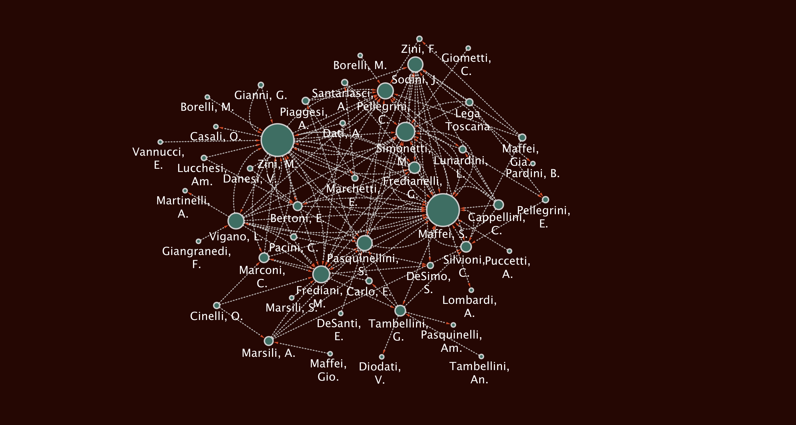
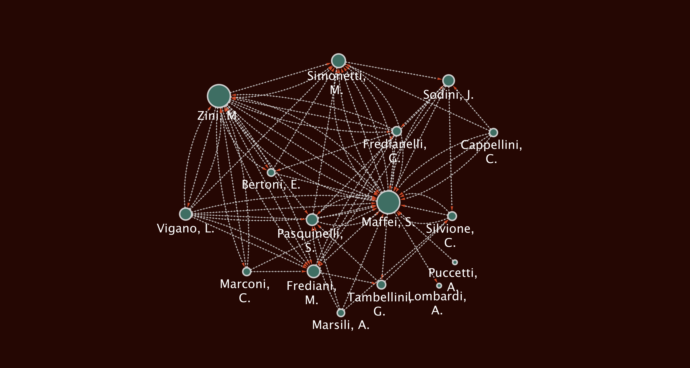
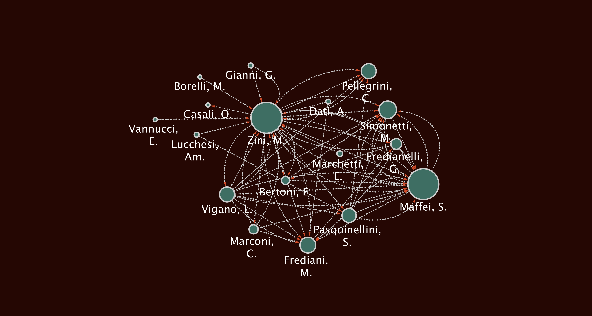

Key Members in the Lega Toscana
La Lega Toscana di Protezione was an organization that provided an substantial
amount of financial, social, and cultural support to all its members, of which there
were 239 recorded in the first volume of minutes. The organization itself held events
like dances, picnics, and private parties; gave generously to individuals in the League
and other members of the Italian community, both locally and abroad; and supported a
nucleus of Tuscan immigrants who had found a home in the Pittsburgh area.
In the seven years recorded in the volume of minutes under our scrutiny, the Tuscan
League proved to be a truly instrumental component of the local Italians, and the
primary interest in this portion of the research was to identify the trajectory of the
League's role with its members, and how that role took shape through the span of time.
Particularly, the underlying motivation behind this research was, Who was the
Lega Toscana, and whom did they impact?
In exploring the former, we
wanted to tease out the organization's influential and impacting individuals, and in
exploring the latter, we wanted to begin to understand the extent of this group's reach
into the local Italian community.
Flow of Members Throughout the Years
There were 239 total individuals named throughout this first span of seven years, but
the number of full members varied, at least slightly, through time. While not all the
membership records in the volume are taken as absolute truth, we were able to identify
general trends in membership through the recording of member acceptances and departures
noted in the meeting minutes. Although there were at least some members who came and
went silently throughout these years (most of whom travelled back to Italy for varied
periods of time), the majority of official changes in membership status were documented
during meetings. Unfortunately, the aggregated information on member flow is not
available, since members were known to silently take leaves of absence for undetermined
amounts of time. That said, there are still distinct patterns in the League's membership
that are worth our attention. Figure 1 is a bar graph visualization that juxtaposes the two
changes in membership status, acceptances and departures, throughout the volume.
Note: Click on any bar in the visualization to browse the names of departed or
accepted members in the organization for the selected year.
As seen in Figure 1, the Tuscan League saw a few distinct trends in regards to changes in
membership status, in both positive and in negative ways. In the first three years of
our recorded minutes, while the League was still rather young, the proportion of
incoming to outgoing members was distinctly positive. Even in light of the loss of 17
members in 1919, member retention was ostensibly rather strong, with over 75 new members
officially earning their membership. However, beginning in 1922, the trend began to see
its first sharp change in trend; the organization saw neither many incoming or outgoing
members in 1922. In 1923 and 1924, the League seemed to slip on its ability to
effectively retain a consistent population. In the minute logs, the years between 1922
and 1924 are speckled with moments where the president or another officer discuss the
need to uphold or improve morale in the organization. Although it's mentioned nowhere in
the manuscript, the subtext suggests that the downward turn in memberships, sinking
morale, and intermittent trips taken by members to Italy could have been influenced, at
least in part, by the ascent of Fascism in Italy, which came to full fruition in March
of 1922 when Benito Mussolini marched on Rome and assumed political control of the
nation under the National Fascist Party. Then, 1925 sees a drastic turn in the
membership statistics, with 65 members accepted into the League, and zero members taking
their leave. Michele Simonetti, one of the most consistently influential members of the
League in the scope of this volume, brought a veteran member's experience to the
administration and seemed to have been driven to counteract the festering problem
surrounding member retention.
Sick Compensation to Lega Members
One of the primary functions of the Tuscan Protection League as evidenced in the
minutes was a means of some level of financial security for its members, both as a type
of welfare service for active members who fall ill and are ostensibly too unwell to
work, and as a source of financial assistance for funerary costs of deceased members. Of
the two, the former was a much more common occurence within the bounds of the minutes,
while the latter did account for four different transactions between the Tuscan League
and family of deceased members, which amounted to about $600. While there were other
forms of payment given to members in the form of reimbursement for purchase of goods for
the group or for a group-sponsored event, or even, as the later years show, as a stipend
to individuals who serve on the executive board, this particular graph focuses only on
sick compensation to members of the Lega Toscana.
One of the most notable conditions in the application process of a new member was the
presentation of a certification of good health by a medical doctor, which was then
verified by the Health Officers, who were responsible for ensuring that all the
requisites for membership were met regarding individual health. While specifics
regarding these requisites were never explicated in the minutes, this medical clearance
likely played such a substantial role because of the offered welfare stipends for unwell
members. The parameters regarding these compensations were never deliberated until 1921,
a year in which five members all received over $50 in compensation. In December of that
year, Michele Simonetti was awarded $56 in for a surgical procedure. After that point,
the decided maximum compensation amount permitted at one time was $50. However, the
fluid and circumstantial governance of the Lega comes into view when both Enrico
Sandroni and Benedetto Pardini are both granted $60 in sick compensation in 1925. While
the Lega Toscana had policies set in place for a number of issues, of which maximum
compensations were one, the organization showed either a willful decision to forego the
policy, or (since the larger sums were granted years after the policy was put into
effect) the Lega could have simply forgotten about them.
Figure 2 is a line graph visualization that shows the outward flow of money to members
for sick compensation only. Given the time constraints of this research, the
organization's use of its finances could not be more closely scrutinized.
Member Activity in the Lega
Member activity, in a general sense, was the component of the research that permitted
the highest potential of exploration. Across the entire Tuscan League, of which there
were 239 people identified as members throughout the years, those who showed agency in
the context of the volume of minutes is much smaller. Less than 50% of the 239 members
-- 114, to be exact -- were truly considered active
members at least for one
moment in time in the organization. The parameters that were set to define member agency
were rather rigid; only those who were evidenced to have served on a committee,
participated in a proposal, served as an officer, or received money from or gave money
to the Lega were considered as active members. With these considerations in place, just
under 50% of the individuals in the organization participated within the bounds of the
minutes volume.
The League's primary expenditure of energy was oriented in the events that they held,
both annual and special events. Every year, they organized a summer picnic and winter
ball, both of which were exhaustively planned beforehand with committees that included
dozens of members at a time. The minutes reveal that these were well-attended events as
well, with a formidable turnout of the League's members. Even though many did not
participate regularly in the monthly precedings, the large summer and winter events were
extremely popular for all affiliates of the Tuscan League. Other committees included
regolamento committees, which were reponsible for revisiting or revising
current organizational policies; investigazione committees, which were charged
with exploratory or investigative work that preceded an event (like finding locales or
drafting committee timelines); other event-based committees like the banchetto
or intrattenimento committees, which either planned small celebrations or
evening socials; with other committees that were formed to fulfill a specific purpose
then disbanded, like the parata (Columbus Day parade) committee or the
stendardo (League flag and banner) committee. Some of these committees, like
the regolamento and investigazione, were always disbanded after a
month, while most of the other committees met for at least two months before
dissolving.
Figure 3 just below is a heatmap that shows the distribution of member activity
across the span of time. The columns each represent one individual who, at any point in
the volume, recorded at least one unit
of activity -- that is, an individual who
served on a committee, participated in a proposal, gave or received money, or acted as
an officer at any single point in time. As is the case with a conventional heat map, the
darker the color of the cell, the more active a member was on that given date.
Note that the black lines that surround a given table cell indicate that the
person in question was an officer at that point in time.
Note: In clicking on a table cell
inside the heat map, the member and activity information will appear in the table that
sits just below the graph. The name of each member is their full last name, followed
immediately by one to three of the first letters of their first name.
Where Figure 3 excels in aggregation of member activity across the span of time among
all members, it lacks in its ability to juxtapose the activity between years. And while
it's clear that officers comprise the vast majority of member activity, it's difficult
to quantify the difference with any degree of certainty, being that the information is
member-centric. Figure 4, thus, reframes the same information through a different
lens. This stacked bar graph represents member activity by year, with the general member
activity being recorded in red, and officer activity in blue. The numbers that appear in
each segment are the raw counts of different units of activity to allow quick and easy
comparison between the two groups. Additionally, all of the bar widths add to 100% of
total activity, but varied degrees of total activity in a year are expressed in the
dynamic widths of the bars. Please refer to the legend below the graph as a guide to
understand the graph.
The true dynamic of member activity across the entire Tuscan League is made most
apparent in this stacked bar graph. The League, a society of almost 240 recorded
individual members, was maintained in major part by a nucleus of ten to fourteen
officers in a given year. In every single recorded year, officer activity amounted to
well over 50% of total organizational activity, with two years surpassing 70%! In the
majority of analyses run for this research, 1921 seems to have a consistently impressive
presence, and, as seen above it's the year that sees the most activity across all
members, and also the greatest partition of activity between general members and
officers.
Networks of Interactions
While the visualizations discussed above mostly orient a focus toward group behaviors
or statistics, the social networks generated for this project are rigidly oriented
toward a specific expression of an individual's contributions to the Lega Toscana. The
chief goal in producing social networks for the Tuscan League is to evoke potential
relationships between members, or to identify individuals who accrued social clout
through the proposals they made. Understanding who spoke with whom can help to unearth
the more nuanced relationships of those in the organization.
Firuges 5, 6, and 7 below are member social networks -- visual depictions of shared interactions during meetings,
namely between those who participated in proposals. The volume itself contained several
distinct types of proposals, but in the interest of strictly visualizing shared
interactions between individual members, only conventional proposals that were passed by
the General Assembly were considered for use in these images. These conventional
proposals were always made by one member and supported by either one or two other
members.
The networks themselves have several different informational components that amount to a
composite picture of the proposals made during the seven-year log. While most of
these are self-explicit, one deserves clarification. The individuals are represented by
nodes, or circles, and the proposals are represented by edges, or
lines. These networks are force-directed, which is to say there is a
source node and a target node. In other words, the interaction
begins with one person and ends with another, instead of the interaction passing
equally through both parties, like a casual conversation would.
The force
, or direction, considered in these networks is one that flows from the supporter to
the proposer, rather than the other way around. Intuitively, the propsal's
source would be he who proposed it, but we displayed the inverse to more readily
identify those who actually make the proposals. The support received from different
members in the Lega can be seen as a type of social credit, and the more proposals made
by an individual that are met with support, the more influence a person may have had in
the Tuscan League's monthly proceedings.
Proposal Social Networks
Figure 5

Figure 5 comprises the entirety of all the approved proposals made during the
seven-year period in the volume of minutes. Immediately, several members can be
identified as central to the network as a whole. Of all those who participated in a
proposal at any point, Stefano Maffei and Modesto Zini are the most well-represented,
with 34 and 33 proposals each, respectively.
Figure 6

In contrast, Figure 6 is a subnetwork that includes only Stefano Maffei and all
those with whom he interacted in a proposal. Stefano Maffei has the highest degree
centrality of all the individuals in the entire network. Degree centrality is
the most intuitive measure of influence in a network. The more connections a single node
has, the higher its degree centrality. There are two other types of centrality that are
commonly measured with social networks, closeness centrality and
betweenness centrality. Closeness centrality is an expression of network
importance based on how quickly one node can access all other nodes in the entire
network. In other words, Stefano Maffei's node can most quickly step to every other node
in the whole network, being that his direct connections are the most prolific and his
secondary connections are also well integrated into the network. Betweenness centrality
is a measure of the number of different subnetworks that one node can access directly,
and again, since Stefano Maffei is so disproportionately central to the culture of
proposals in the Tuscan League, he is considered to be a central gatekeeper of the
other, much smaller, subnetworks in this visualization.
Figure 7

The third and final social network visualization is the subnetwork for Modesto Zini.
Modesto Zini is a person of particular interest in this research, for he defies the
conventional behavioral patterns for an individual of his standing in the Lega. He is
only an elected officer for one year, yet he is shown to be consistently and
substantially active as a member throughout the seven-year period. He is involved with
33 proposals, and his subnetwork also displays him with all his adjacent neighbors.
Unlike Stefano Maffei, however, Modesto Zini has a richer variety of immediate
connections, which include both members who tended to serve as officers, and others who
did not. Stefano Maffei's network is much more closely connected with officers, and
Modesto Zini seems to effectively straddle the line between officers and general
members. While, statistically speaking, Stefano Maffei has the most social clout, it's
well worth noting that Modesto Zini has a particularly healthy network of immediate
connections in this proposal network, as evidenced by his numerous connections with
smaller, less globally influential nodes in the network.